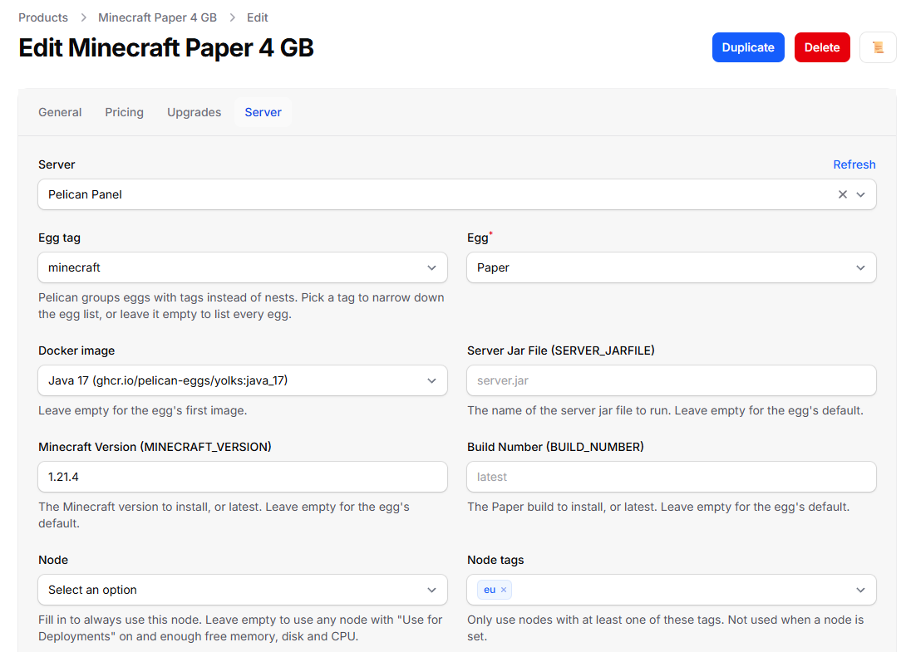
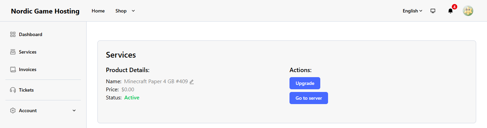
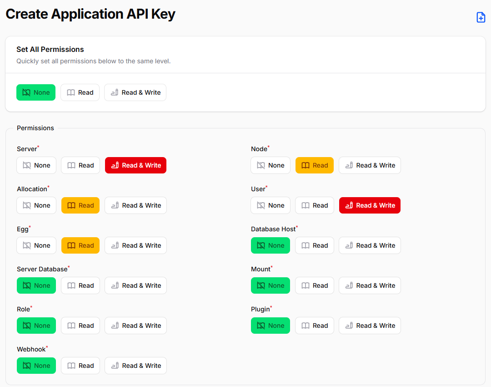

Pelican Panel for Paymenter
Sell game servers on Pelican Panel with Paymenter. When an order is paid, Paymenter creates the server in Pelican, and suspends, unsuspends, upgrades and deletes it with its own jobs. Customers get a Go to server button.
Tested with Paymenter 1.5.9 and Pelican Panel v1.0.0-rc.2. The same release zip is also on Gumroad.

Why Paymenter's Pterodactyl extension does not work with Pelican
Paymenter ships extensions for Pterodactyl, Convoy, Virtfusion and others, but none for Pelican: not in Paymenter 1.5.9 and not in its development branch (checked on 25 October 2026). Pelican started as a fork of Pterodactyl, but its Application API has changed. Paymenter's Pterodactyl extension reads nests and locations, and Pelican answers with:
The route api/application/nests could not be found.This extension starts from Paymenter's own (MIT) Pterodactyl extension and follows Pelican's current Application API where it differs.
What it does
- Creates the server when an order is paid, with the product's egg, Docker image, egg variables, memory, swap, disk, CPU, IO weight, CPU pinning, and database, backup and port limits.
- Eggs straight from Pelican. Pelican has no nests: the product page lists every egg, narrows the list by egg tag, and shows the egg's Docker images and one field per egg variable.
- Node tags or a fixed node. Pelican has no locations: a product can use any node with one of its node tags, or always the same node.
- Every server gets a port. Pelican's own automatic deployment only assigns a port when a port range is sent, so the extension picks the node and the port itself. Port ranges, port arrays (for example a query port written to its egg variable) and dedicated IP addresses are supported.
- The right customer account. Pelican's email filter also matches parts of addresses, so the extension reads every page of matches and takes the account with exactly the customer's address. Without one it creates an account, and Pelican emails a link to set the password.
- Suspend, unsuspend, upgrade and terminate from Paymenter's jobs and from the admin's Trigger Extension Action. Upgrades change the same server and keep its egg variables.
- Test Connection checks the URL, the key and every read permission, and names the missing one.
- Clear errors with the HTTP status, the request, Pelican's reason and what to change.

Install
- Download
paymenter-pelican-1.0.0.zipfrom the latest release. - In Paymenter: Admin → Extensions → Available Extensions → Upload Extension, and upload the zip ("Server uploaded successfully"). Or copy the
PelicanPanelfolder toextensions/Servers/. - In Pelican: Admin → Advanced → API Keys → +. Set Server and User to Read & Write, Node, Allocation and Egg to Read, everything else to None, and create the key.
- In Paymenter: Admin → Servers → Create, Server PelicanPanel, enter the Pelican URL and the key, and click Test Connection.
- On each product: Server tab → the Pelican server, then the egg, the node tags (or a node) and the resources.

Differences from the Pterodactyl extension
| Paymenter's Pterodactyl extension (1.5.9) | This extension on Pelican | |
|---|---|---|
| Eggs | Nest, then egg | Eggs directly, optional egg tag filter |
| Where servers go | Locations, or a node | Node tags, or a node |
| The server's port | Pterodactyl's automatic deployment picks one | The extension picks one |
| Egg variables | Config options named after the variable | The same, plus a field per variable on the product page |
| Customer's account | The first result of the panel's email filter | The account with exactly that email address, on any page |
| API key | ptla_… | papp_…, permissions Server, User, Node, Allocation, Egg |
Products cannot be moved from the Pterodactyl extension as they are: set the egg and the node tags on each product again.
Troubleshooting
| Message | What to do |
|---|---|
HTTP 401 ... The API key was not accepted | Copy the whole key again. Use an Application API key (Admin → Advanced → API Keys), not a key from your account page. |
HTTP 403 ... The API key needs "Read" for Allocation | Create a key with the permissions above. Pelican cannot change the permissions of an existing key. |
No node can take this server | No node with Use for Deployments on has the free memory, disk and CPU, or none has one of the product's node tags. |
| Go to server shows 404 | The browser is signed in to Pelican as a user who does not own the server. |
Every message, product field, uninstalling and what was tested: README on GitHub.
Trials for your Pelican servers
Free Trials for Paymenter lets people try a server before they buy it: one trial per person, a reminder before it ends, suspend and terminate afterwards, and an Upgrade and keep my server button. It works with any Paymenter server extension that supports suspend, unsuspend and terminate (and upgrade, when the trial converts to another product); it was tested with the Pterodactyl 2.0 server extension.
FAQ
Does the customer get a Pelican password?
If the account is new, Pelican emails a link to set one (Pelican needs working mail settings). Existing accounts with the same email address are used as they are.
Why does Go to server show 404 in Pelican?
The browser is signed in to Pelican as someone who does not own the server; Pelican answers 404 for other users' servers. Sign out or sign in as the customer.
Can customers choose the memory or a game version?
Yes, with Paymenter config options whose environment variable is memory (or another product setting) or the egg variable's name, such as MINECRAFT_VERSION.
Does it reinstall a server on upgrade?
No. It changes the resources of the same server. A product with another egg moves the server to that egg; Pelican does not reinstall it by itself.
Does it work with Pterodactyl?
Use Paymenter's Pterodactyl extension for Pterodactyl 1.x. This one is for Pelican.
More about this extension: karelialabs.com. More tools from the same team: karelialabs.com/tools.